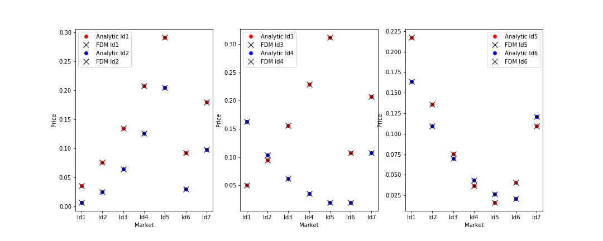

EuroOptExample.cpp
Example shows how to calculate euro option price using FDM pricer. Below we compare analytic solution with FDIFF method (plot based on EuroOptExample_sample.csv). We see perfect match

Here we see the intermediate steps in solution. We see how diffusion process of option's value starts from payoff and ends as presents value while time is going backwards

Output
------------------------------
Id Strike Tenor Type
------------------------------
Id1 1.0 1.5 C
Id2 1.05 0.75 C
Id3 1.01 2.0 C
Id4 1.0 1.5 P
Id5 1.05 0.75 P
Id6 1.01 2.0 P
Id7 1.0 0.5 C
Id8 1.05 2.75 P
Id9 1.01 3.0 C
------------------------------
--------------------------
Id Spot Vol Rate
--------------------------
Id1 0.8 0.2 0.05
Id2 0.9 0.2 0.05
Id3 1.0 0.2 0.05
Id4 1.1 0.2 0.05
Id5 1.2 0.2 0.05
Id6 1.0 0.1 0.05
Id7 1.0 0.3 0.05
--------------------------
Name: option
Strike: 1 Tenor 1.5 Type Call
Name: market
Spot: 1 Vol 0.2 Rate 0.05
FDM price 0.134451
Analytic price 0.134429
#include <marian.hpp>
using namespace marian;
int main () {
//
// Reading option and market sample
//
std::map<std::string, EuroOpt> options = createEuroOpts(opt_df);
std::map<std::string, Market> markets = createMarkets(mkt_df);
opt_df.print();
mkt_df.print();
//
// Preparing building blocks of PDE solver
//
LUSolver solver;
UniformGridBuilder grid;
SpotRelatedRange range_setter(0.2, 3.0);
CrankNicolsonScheme scheme;
//
// Constructing pricer and pricing option sample
//
FDMPricer pricer(scheme, solver, grid, grid, range_setter);
DataFrame results;
for (auto market : markets) {
for (auto option : options) {
DataEntryClerk input;
input.add("Option", option.first);
input.add("Analytic", analytic_price);
input.add("FDM", fdm_price);
input.add("Diff", fdm_price - analytic_price);
results.append(input);
} // options
} // markets
//
// Saving results to csv file
//
//
// Saving whole solution for selected market and option to csv file
//
auto option = options["Id1"];
auto market = markets["Id3"];
SHOW(option);
SHOW(market);
auto fdm_price = pricer.price(market, option, 100, 200);
auto analytic_price = BSprice(market, option);
std::cout << "FDM price\t" << fdm_price << std::endl;
std::cout << "Analytic price\t" << analytic_price << std::endl;
}